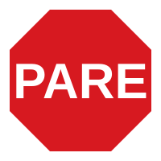
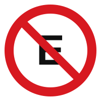
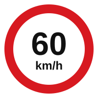
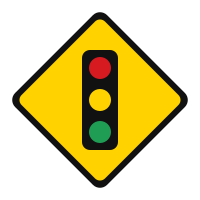
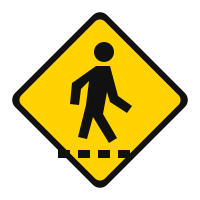
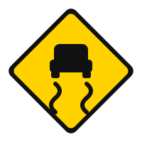
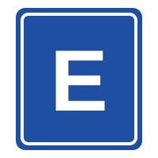
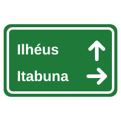

Parada obrigatória
O condutor deve parar completamente antes de seguir.
Cada placa, cada faixa e cada limite de velocidade existe para proteger vidas. Motoristas, pedestres e ciclistas dividem o mesmo espaço — e a segurança depende da atitude de todos nós.
Ver dicas de segurançaOs números mostram por que respeitar as regras é uma questão de vida ou morte.
mortes no trânsito brasileiro em 2024 — cerca de 100 vidas perdidas por dia.
| Ano | Mortes | Média por dia |
|---|---|---|
| 2020 | 32.716 | ≈ 89 |
| 2021 | 33.813 | ≈ 93 |
| 2022 | 33.894 | ≈ 93 |
| 2023 | 34.881 | ≈ 96 |
| 2024* | 37.150 | ≈ 102 |
| Fator de risco | Por que é perigoso |
|---|---|
| Excesso de velocidade | Aumenta a distância de frenagem e a gravidade das lesões. |
| Álcool ao volante | Reduz reflexos, atenção e percepção de risco. |
| Uso do celular | Tira os olhos da via e as mãos do volante por vários segundos. |
| Desrespeito à sinalização | Avançar sinal ou parada obrigatória provoca colisões graves. |
| Falta de cinto ou capacete | Multiplica o risco de morte em caso de colisão. |
Fonte: Ministério da Saúde — DATASUS/SIM, dados consolidados divulgados pelo Observatório Nacional de Segurança Viária (ONSV). *2024: dado mais recente da série.
O Código de Trânsito Brasileiro (Lei nº 9.503/1997) define as infrações, as multas e os pontos na CNH.
| Infração | Artigo | Gravidade | Multa | Pontos |
|---|---|---|---|---|
| Dirigir sob influência de álcool | Art. 165 | Gravíssima (x10) | R$ 2.934,70 | 7 + suspensão |
| Usar o celular ao volante (segurando ou manuseando) | Art. 252, parágrafo único | Gravíssima | R$ 293,47 | 7 |
| Avançar o sinal vermelho | Art. 208 | Gravíssima | R$ 293,47 | 7 |
| Não dar preferência ao pedestre na faixa | Art. 214, I | Gravíssima | R$ 293,47 | 7 |
| Excesso de velocidade acima de 50% do limite | Art. 218, III | Gravíssima (x3) | R$ 880,41 | 7 + suspensão |
| Excesso de velocidade entre 20% e 50% | Art. 218, II | Grave | R$ 195,23 | 5 |
| Excesso de velocidade até 20% | Art. 218, I | Média | R$ 130,16 | 4 |
| Não usar o cinto de segurança | Art. 167 | Grave | R$ 195,23 | 5 |
| Conduzir moto sem capacete | Art. 244, I | Gravíssima | R$ 293,47 | 7 + suspensão |
Fonte: Código de Trânsito Brasileiro (Lei nº 9.503/1997), com alterações da Lei nº 14.071/2020. Valores-base: leve R$ 88,38 · média R$ 130,16 · grave R$ 195,23 · gravíssima R$ 293,47.
As placas são a linguagem da via. Conheça os três grandes grupos de sinalização vertical.

O condutor deve parar completamente antes de seguir.

Não é permitido estacionar o veículo no trecho sinalizado.

Indica o limite de velocidade permitido na via.

Reduza a velocidade: há um semáforo adiante.

Atenção à travessia de pedestres na faixa.

Pista com pouca aderência: dirija com cuidado.
Indica a proximidade de um serviço de saúde.

Mostra onde é permitido estacionar.

Orienta o caminho para cidades e localidades.
Filme oficial do Maio Amarelo, movimento internacional de conscientização para a redução de acidentes, produzido pelo Observatório Nacional de Segurança Viária (ONSV).
“No trânsito, enxergar o outro é salvar vidas.”
Pequenas atitudes do dia a dia fazem um trânsito mais seguro para todos.